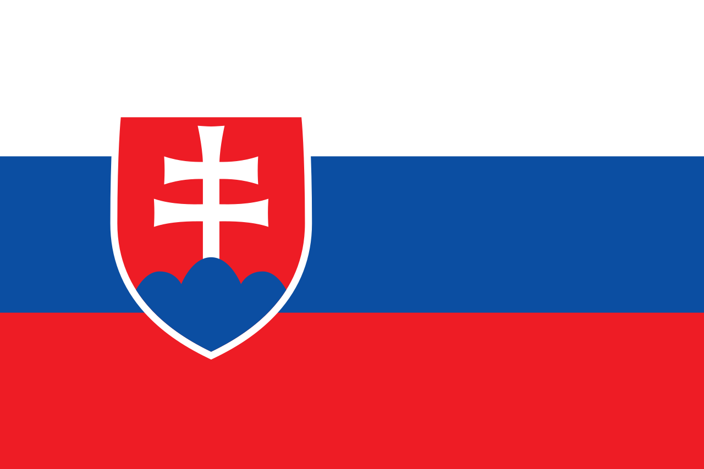
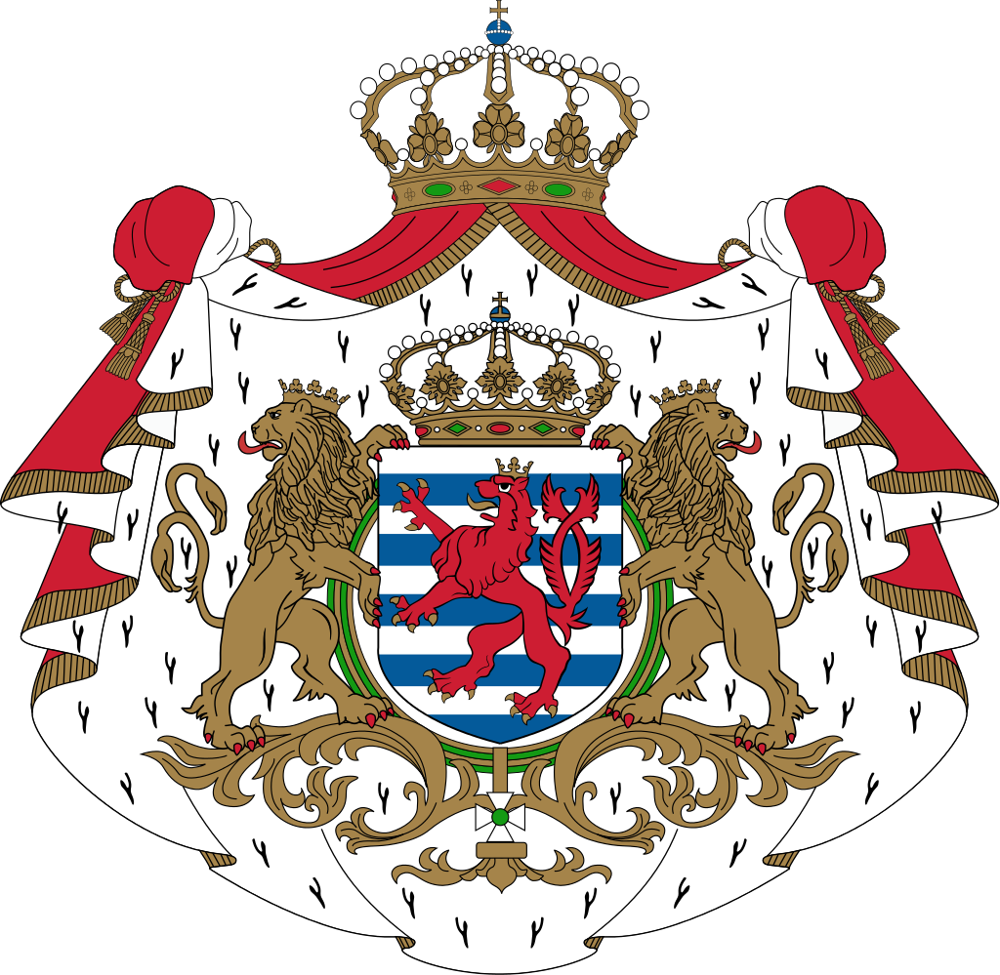
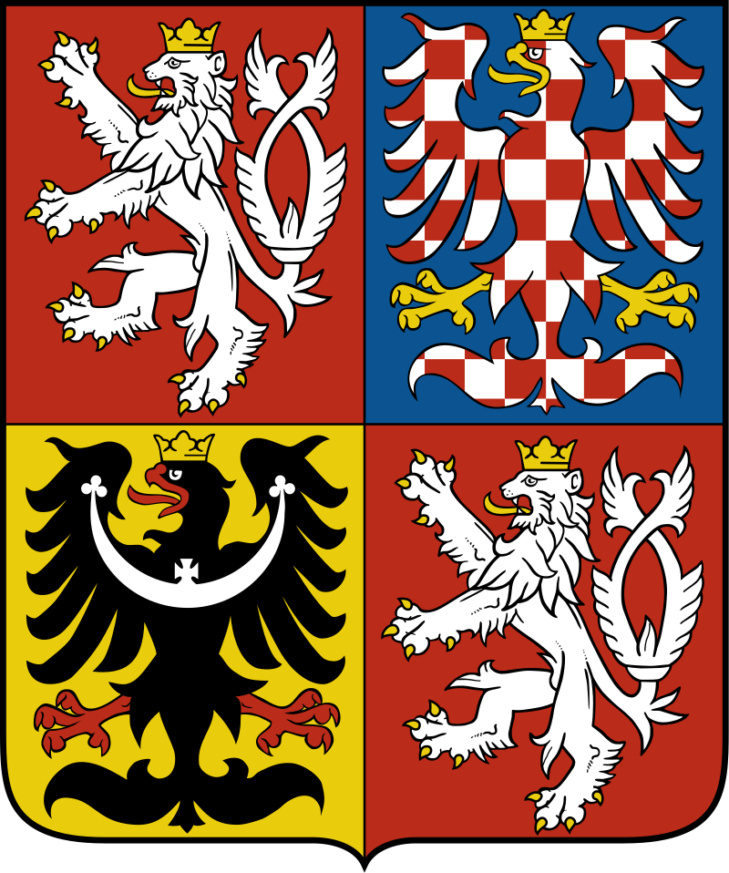

Страны Европейского Союза |
| В страны Европейского Союза входят: Австрия, Бельгия, Болгария, Венгрия, Германия, Греция, Дания, Ирландия, Испания, Италия, Кипр, Латвия, Литва, Люксембург, Мальта, Нидерланды, Польша, Португалия, Румыния, Словакия, Словения, Финляндия, Франция, Хорватия, Чехия, Швеция и Эстония. |
| Страны |
Люксембург |
Греция |
Чехия |
Словакия |
| Флаг |
 |
 |
 |
 |
| Герб |
 |
|
 |
|
| Столица |
Люксембург |
Афины |
Прага |
Братислава |
| Краткое описание |
Крошечная европейская страна делит границы с Германией, Бельгией и Францией. Так как территория государства мала, туристы не приезжают сюда надолго. Однако местное гостеприимство, кухня и высочайший уровень комфорта в отелях не забудутся никогда. Люксембург — добротная страна, свято хранящая свою государственность и традиции. Это богатейшее место Европы, посетить которое есть смысл каждому. |
Греция является одной из самых посещаемых стран Европы. И дело не только в том, что у нее прекрасные пляжи, подходящий для летнего отдыха климат и чистое море. Греция является музеем под открытым небом. Каждый город пропитан духом древности. Даже в самых небольших деревнях Греции можно найти развалины древней крепости или фрагменты античных храмов. Середина и конец мая являются лучшим временем для отдыха в Греции. В это время еще не жарко, туристов немного и уже можно купаться. Бархатный сезон в Греции - сентябрь и октябрь. В июле - августе лучше отдыхать на островах, там жара легче переносится из-за бриза. |
Чехия - страна контрастов. В ней присутствует и славянская самобытность, и средневековая чопорность, и легкая современность. Даже самому взыскательному туристу будет на что посмотреть. Сюда можно отправиться с семьей, чтобы отдохнуть на природе или же активно провести время на каком-либо горнолыжном курорте, можно поехать с друзьями и осмотреть все достопримечательности, побывать в средневековых замках и окунуться в жизнь модной европейской столицы, можно поправить здоровье на одном из лечебных курортов. |
Словакия может предложить туристам прекрасные условия для зимнего и летнего отдыха. Горнолыжные курорты страны ничуть не уступают французским или австрийским - уровень сервиса достаточно высок, зато цены здесь значительно ниже. Регион словацких Татр считается одним из самых экологически чистых во всей Европе - сосновые леса, свежий воздух и красивые ландшафты помогут вам восстановить силы и даже подлечить некоторые недуги. Кроме этого, в Словакии открыто множество минеральных термальных источников, на основе которых были образованы больнеологические центры, разросшиеся в целые курорты. Любознательным туристам также будет что посмотреть - своеобразную архитектуру словацких городов, загадочные средневековые замками и разнообразные пещеры. |
|
Люксембург |
Греция |
Чехия |
Словакия |